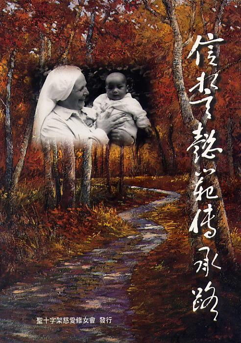
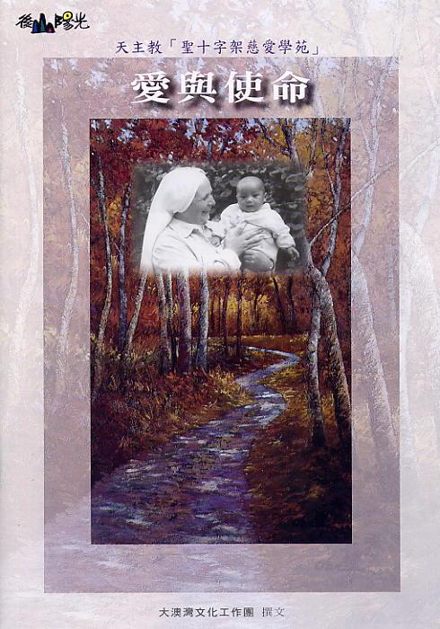
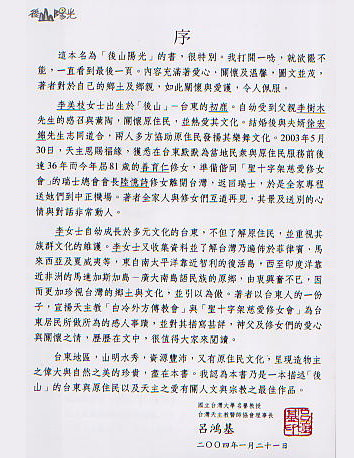
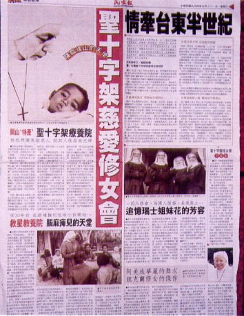
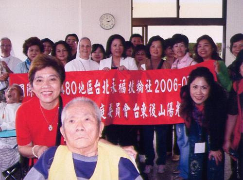
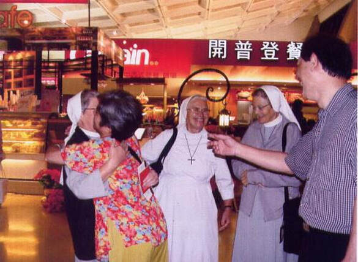
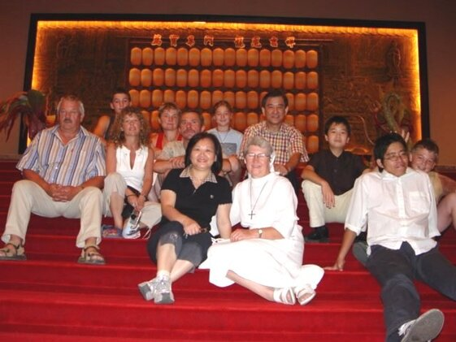
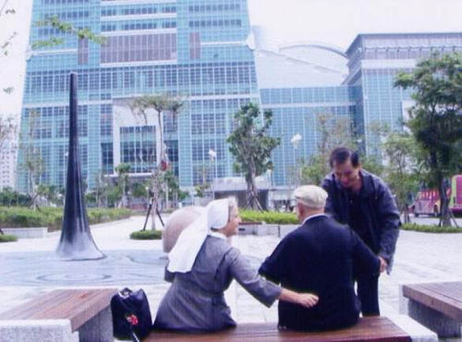
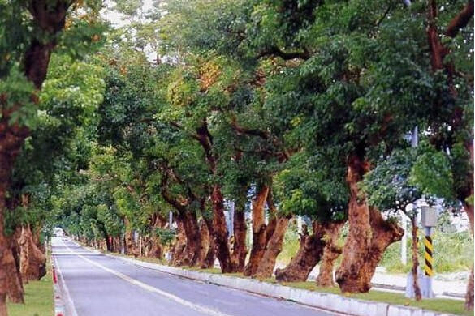

用昂揚的歌聲與曼妙舞姿，連結部落、走進社區、躍上國際。（點擊照片可放大檢視高畫質照片）

國際文化交流策劃執行參與『日本北海道白老愛努族國際原住民節活動』，展演台灣原住民傳統樂舞，進行深度的跨國南島與原民文化交流，並與愛努族長老留下珍貴合影。

國際文化交流參與 2000 年『加拿大多倫多國際文化節』活動，策劃演出台灣原住民傳統樂舞。團隊獲多倫多市長接見並合影留念，深受國際社會高度讚賞。

國際醫學盛會策劃台灣首辦『亞洲小兒科醫學會大會』之週年慶整場晚宴活動，於台北君悅飯店向來自 40 餘國之小兒科醫學界權威展示台灣原住民樂舞與舞台藝術佈景。

公益義演募款於台北 SOGO 百貨後方廣場及微風廣場進行原住民樂舞義演，為台東基督教醫院『行動醫療』巡迴專案與台東農特產暨生態旅遊大力宣傳募款。

文化與社區於圓山大飯店向若石學術研討會國際貴賓展演，並於文昌國小慶祝新廈落成活動中，與著名原住民歌者萬沙浪同台演出，現場氣氛熱烈動人。

族群天籟傳承策劃安排台東霧鹿布農族人於真理大學禮堂演出『報功宴』(Malastapang)，重現享譽國際的天籟之聲『八部合音』(Pasibutbut)。
於真理大學活動廣場盛大展演，帶領來自世界各國青年代表台上台下牽手同歡共舞，將台灣多元文化的熱情傳遞給全球青年。

企業文化展演於圓山大飯店 12 樓大宴會廳盛大演出，賓客雲集，讓來自日本與德國等各國國際貴賓深度領略台灣原住民精湛優雅的文化底蘊。

國家文化推廣於台大國際會議廳演出，透過動人樂舞與各界貴賓及國際友人熱烈互動，推廣台灣山林原鄉文化與影視紀錄。

社區營造深入基層社區參與『名山里半月弦荒地改造啟用典禮』，以生動活潑的原民樂舞帶動社區居民與長幼老少走出戶外熱情同樂。